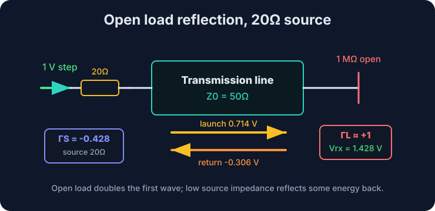
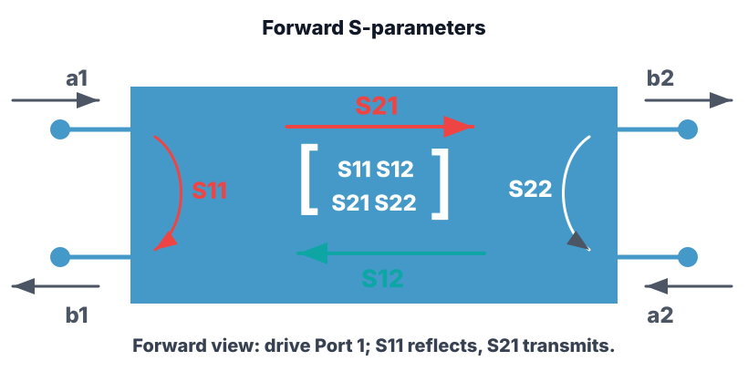
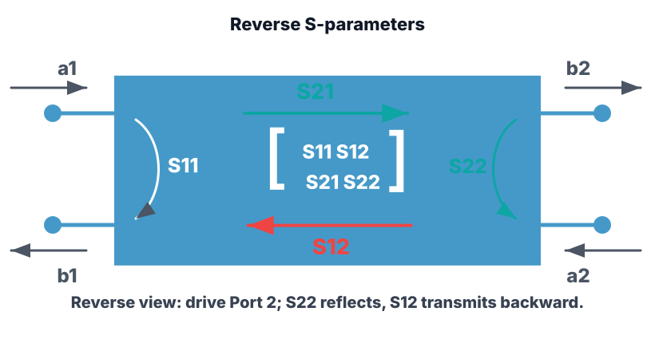
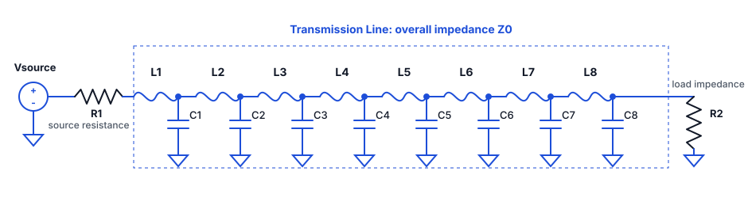
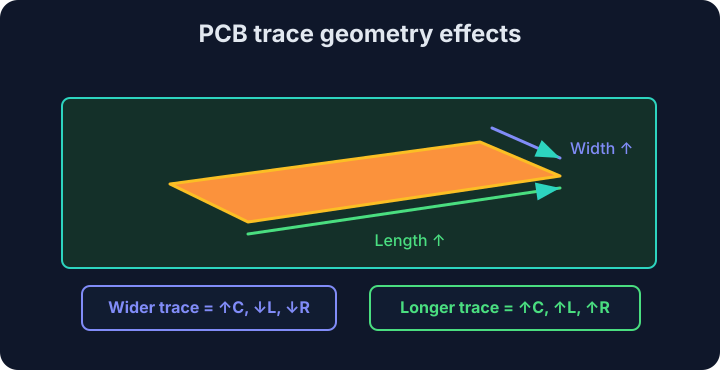
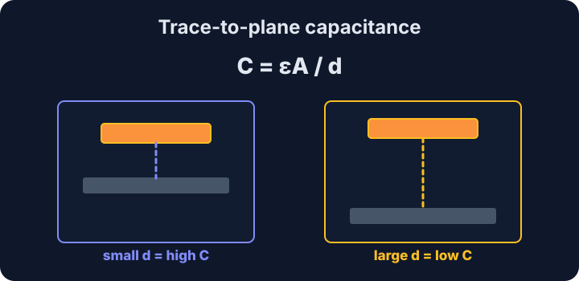
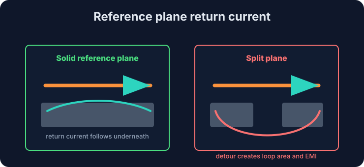
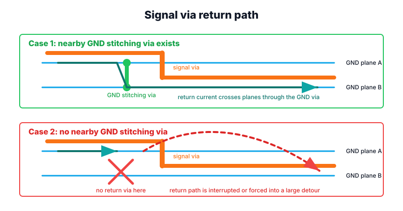
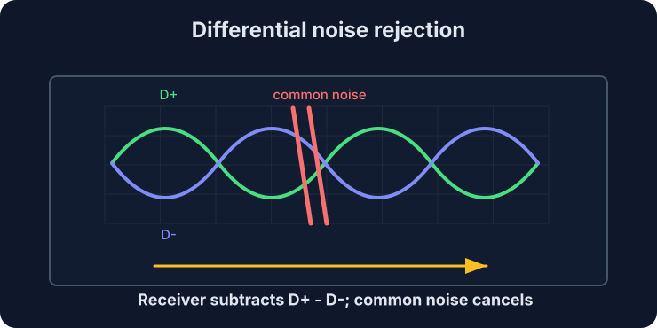
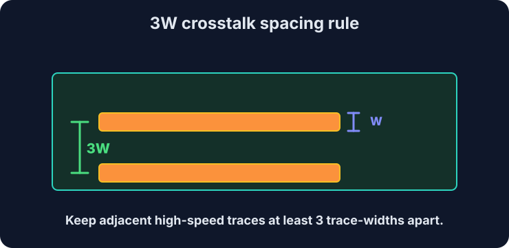

transmission-line-theory-a-1v-step-is-sent-from-a-20-driver-into-a-50 / image_1
Open load reflection, 20Ω source tl_open_20_source

Prompt
A schematic showing a 1V step voltage source connected to a 20Ω series resistor (driver), feeding into a long transmission line block labeled 'Z0 = 50Ω'. The end of the transmission line is left unconnected, labeled '1 MΩ (Open)'.
transmission-line-theory-a-1v-step-is-sent-from-a-50-driver-into-a-50 / image_1
Open load reflection, 50Ω source tl_open_50_source
Prompt
A schematic showing a 1V step voltage source connected to a 50Ω series resistor (matched driver), feeding into a transmission line labeled 'Z0 = 50Ω', ending at an open circuit.
transmission-line-theory-in-rf-theory-what-do-the-s-parameters-s11-and / image_1
Forward S-parameters s_params_forward

Prompt
A two-port network block diagram. Port 1 is on the left, Port 2 on the right. An arrow enters Port 1. S11 is shown as an arrow reflecting back out of Port 1. S21 is shown as an arrow passing straight through the block from Port 1 to Port 2.
transmission-line-theory-what-do-the-s-parameters-s22-and-s12-represen / image_1
Reverse S-parameters s_params_reverse

Prompt
A two-port network block diagram. An arrow enters Port 2 on the right. S22 is shown as an arrow reflecting back out of Port 2. S12 is shown as an arrow passing backward through the block from Port 2 to Port 1.
transmission-line-theory-pcb-how-do-you-draw-the-lumped-element-electr / image_1
Transmission-line LC ladder tl_lc_ladder

Prompt
A schematic labeled 'Transmission Line' showing a cascaded LC ladder network. It consists of multiple series inductors (L1, L2, L3...) and multiple shunt capacitors (C1, C2, C3...) connecting the nodes between the inductors to ground.
transmission-line-theory-pcb-how-does-changing-the-physical-width-and / image_1
PCB trace geometry effects pcb_trace_geometry

Prompt
A 3D illustration of a PCB trace. Arrows indicate increasing the width (W) and length (L). Callout boxes summarize the effects: 'Wider Trace = ↑C, ↓L, ↓R' and 'Longer Trace = ↑C, ↑L, ↑R'.
transmission-line-theory-pcb-how-does-the-distance-between-a-signal-tr / image_1
Trace-to-plane capacitance pcb_trace_capacitance

Prompt
A cross-section of a PCB showing the capacitance equation C = (ε * A) / d. Two scenarios are shown: A trace close to the ground plane (labeled 'High C') and a trace far from the ground plane (labeled 'Low C').
transmission-line-theory-pcb-why-is-an-unbroken-continuous-ground-refe / image_1
Reference plane return current pcb_return_plane

Prompt
Two top-down PCB views. Top: A signal trace cleanly crossing over a solid ground plane, with return current tightly following underneath. Bottom: A signal trace crossing a split in the ground plane, with return current forced to take a massive detour around the gap.
transmission-line-theory-pcb-when-a-high-speed-signal-transitions-betw / image_1
Signal via return path pcb_return_via

Prompt
A cross-section of a multi-layer PCB. A signal via drops from Top to Bottom layer. Right next to it, a Ground via connects the internal ground planes, showing the return current loop flowing tightly alongside the signal via.
transmission-line-theory-pcb-what-is-a-differential-signal-pair-and-wh / image_1
Differential noise rejection differential_noise_rejection

Prompt
A graph showing two equal and opposite signal waveforms (D+ and D-). A spike of noise hits both equally at the same time. A third waveform shows the resulting (D+ minus D-) math, resulting in a perfectly clean signal with the noise removed.
transmission-line-theory-pcb-what-are-the-best-pcb-layout-techniques-t / image_1
3W crosstalk spacing rule pcb_3w_rule

Prompt
A diagram illustrating the 3W rule. Two parallel PCB traces are shown with a width of 'W'. The distance between their centerlines is marked as '3W'.